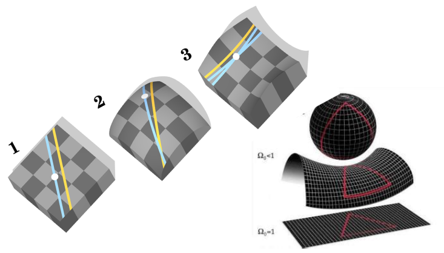

Geometría no Euclidiana: 1829
La geometría euclidiana es la geometría en planos rectos con rectas paralelas. La geometría no euclidiana es la geometría en planos donde no existen las rectas paralelas. Necesitan una curvatura. Por ejemplo, en una esfera, denominada geometría elíptica, no hay rectas paralelas, ya que por la curvatura siempre se unen. Además, la suma de los ángulos de un triángulo suman más de 180°. En geometría hiperbólica, la curvatura es negativa, no hay rectas paralelas, y la suma de los ángulos de un triángulo da menos de 180°. Fue descubierta independientemente por Carl Friedrich Gauss, Nikolái Lobachevsky, Janós Bolyai, y Ferdinand Schweisckard.
Volver a la página principal